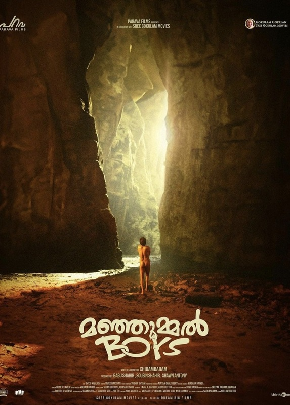

Director: ചിദംബരം
Review by: സിന്ധു ഉല്ലാസ്
മഞ്ഞുമ്മൽ ബോയ്സ്...
ചിദംബരം രചനയും സംവിധാനവും നിർവഹിച്ച, പറവ ഫിലിംസിന് വേണ്ടി ബാബു ഷാഹിർ, സൗബിൻ ഷാഹിർ, ഷോൺ ആൻ്റണി എന്നിവർ ചേർന്നാണ് ഇത് നിർമ്മിച്ചത്. ഒരു യഥാർത്ഥ സംഭവത്തെ അടിസ്ഥാനമാക്കിയുള്ള കഥയാണിതിൽ. ഒരു കൂട്ടം സുഹൃത്തുക്കളെ ചുറ്റിപ്പറ്റിയുള്ള കഥ. വളരെ നല്ലൊരു സന്ദേശമാണ് ഈ സിനിമ മുന്നോട്ട് വെച്ചത്. യൗവനത്തിന്റെ തിരത്തള്ളലിൽ ട്രിപ്പ് പോകുന്ന കുറച്ച് യുവാക്കളുടെ കഥയാണിത്.
വളരെ ചിന്തിക്കേണ്ട ഒരു സബ്ജക്ട് - ചെയ്യരുതാത്ത കാര്യങ്ങൾ ചെയ്യാൻ വെമ്പുന്ന പ്രായം. പോകരുതെന്ന ബോർഡ്, വേലികൾ കൊണ്ട് മറച്ചു കെട്ടിയിട്ടും മറികടന്ന് തങ്ങളുടെ യാത്ര ആഘോഷം ആക്കുന്ന ഒരുപറ്റം ചെറുപ്പക്കാർ. അപകടം പിടിച്ച ഗുണ കേവ്സിൽ കൂട്ടുകാരിൽ ഒരാൾ അകപ്പെട്ടു പോകുന്നതാണ് കഥ.
ഒരു യഥാർത്ഥ സംഭവത്തെ ചുറ്റിപ്പറ്റിയുള്ള കഥയാണ്.
ഇതിൽ ഏറ്റവും മനോഹരമായ തോന്നിയത് ഈ സിനിമയുടെ സെറ്റാണ്. പെരുമ്പാവൂര് ഒരു ഗോഡൗണിൽ ഏകദേശം നാല് കോടി രൂപയോളം മുടക്കി നിർമ്മിച്ച സെറ്റിൽ ആയിരുന്നു ഷൂട്ടിംഗ് നടത്തിയത്. ഇന്റർവെൽ വരെ കൂട്ടുകാരുടെ കളിയും ചിരിയും കുടിയും പോകുന്നതിനുള്ള ആഘോഷങ്ങളും ആണ് ചിത്രീകരിച്ചിരിക്കുന്നത്.
രാവിലെ മുതൽ കുടിക്കുന്ന സുഹൃത്തുക്കൾ. അങ്ങനെ അതിലൊരാൾ ഈ ഗുഹയിൽ അകപ്പെട്ടു പോവുകയും പോലീസും ഫയർഫോഴ്സും നിഷ്ക്രിയരായി നിൽക്കുന്ന സാഹചര്യത്തിൽ സുഹൃത്തുക്കളിൽ ഒരാൾ ഗുഹയിൽ ഇറങ്ങി മറ്റേയാളെ രക്ഷിക്കുന്നതാണ് കഥ.
ആ നാട്ടിൽ നിലനിൽക്കുന്ന ചില വിശ്വാസങ്ങൾ, ആരെയും ഈ ഗുഹയുടെ അടുത്തേക്ക് പോകാൻ അനുവദിക്കുന്നില്ല. ഗുഹയ്ക്കുള്ളിൽ ചാത്തൻ ഉണ്ടെന്നും അതിനുള്ളിൽ വീണുപോയ 13 പേരും പിന്നീട് വെളിച്ചം കണ്ടിട്ടില്ല എന്നും പറയുന്നു. അതിസാഹസികമായി ആ ഗുഹയുടെ അഗാധതയിലേക്ക് കയർ വഴി ഇറങ്ങിപ്പോയി തന്റെ കൂട്ടുകാരനെ രക്ഷിച്ചു കൊണ്ടു വരുമ്പോൾ ചാത്തൻ എന്ന വിശ്വാസം ഇവിടെ പൊളിച്ച് എഴുതുകയാണ്.
ഭയമെന്ന വികാരം അത് പോലീസിനും ഫയർഫോഴ്സിനും ഒരുപോലെയാണ്. ചാത്തനോടുള്ള പേടിയും ആഴമുള്ള ഗുഹയിലേക്ക് ഇറങ്ങാനുള്ള ഭയവും അവന്റെ ജീവനാണ് വലുത് എന്ന ചിന്തയും കർമ്മത്തിൽ നിന്ന് അവരെ പിന്നോട്ട് വലിക്കുന്നുണ്ട്.
സുഹൃത്ത് ബന്ധത്തിന്റെ ആഴം മറ്റൊരു ഘടകമാണ്. ജീവൻ പണയം വെച്ചാണ് സുഹൃത്തിനെ രക്ഷിക്കാൻ തുനിയുന്നത്.
സുഷിൻ ശ്യാമിന്റെ സംഗീതം. അതിമനോഹരമായ പ്രകൃതി. കൊടൈക്കനാലിന്റെ ദൃശ്യഭംഗി. ഗുണ കേവ്സിന്റെ മാസ്മരികത, ഗംഭീരമായ ക്യാമറ, ഗ്രാഫിക്സ്, സെറ്റ്, എല്ലാം ഒന്നിനൊന്ന് മികച്ചതായിരുന്നു.
അഗാധമായ ഗർത്തത്തിലേക്ക് പതിച്ച ശ്രീനാഥ് ഭാസിയുടെ കഥാപാത്രം എപ്പോഴും നൊമ്പരം ഉണർത്തും. ആകാംക്ഷയുടെ മുൾമുനയിൽ ആണ് സിനിമ കണ്ടു തീർക്കുന്നത്. വീഴ്ചയുടെ ആഘാതത്തിൽ ശ്രീനാഥ് ഭാസിയുടെ കഥാപാത്രത്തിന് ഉണ്ടാകുന്ന മാനസികാവസ്ഥ നമ്മളെ വല്ലാതെ അലട്ടും.
ഇതിൽനിന്ന് നമുക്ക് കിട്ടുന്ന വലിയൊരു സന്ദേശം, ട്രിപ്പ്കൾ ആഹ്ലാദിക്കാനുള്ളതാണ്, അതൊരു ദുരന്തമായി മാറാതിരിക്കാൻ നാം കൂടി ശ്രദ്ധിക്കണം. ഇവിടെ ആ സുഹൃത്തിനെ രക്ഷിക്കാൻ കൂട്ടുകാരിൽ ഒരാൾ തയ്യാറായതുകൊണ്ട് അയാൾ രക്ഷപ്പെട്ടു. രക്ഷപ്പെടാതെ പോയ എത്രയോ പേർ എത്രയോ ട്രിപ്പുകളിൽ ജീവൻ പൊലിഞ്ഞു പോയിട്ടുണ്ടാവും.
സംഭവകഥയാണെങ്കിൽ പോലും നമ്മെ പിടിച്ചിരുത്താൻ ഈ സിനിമയ്ക്ക് കഴിഞ്ഞു. കുറെ നേരത്തേക്ക് ആ ഗുണ കേവ്സിലെ കാഴ്ചകൾ എന്നെ അലട്ടിക്കൊണ്ടേയിരുന്നു.🙏